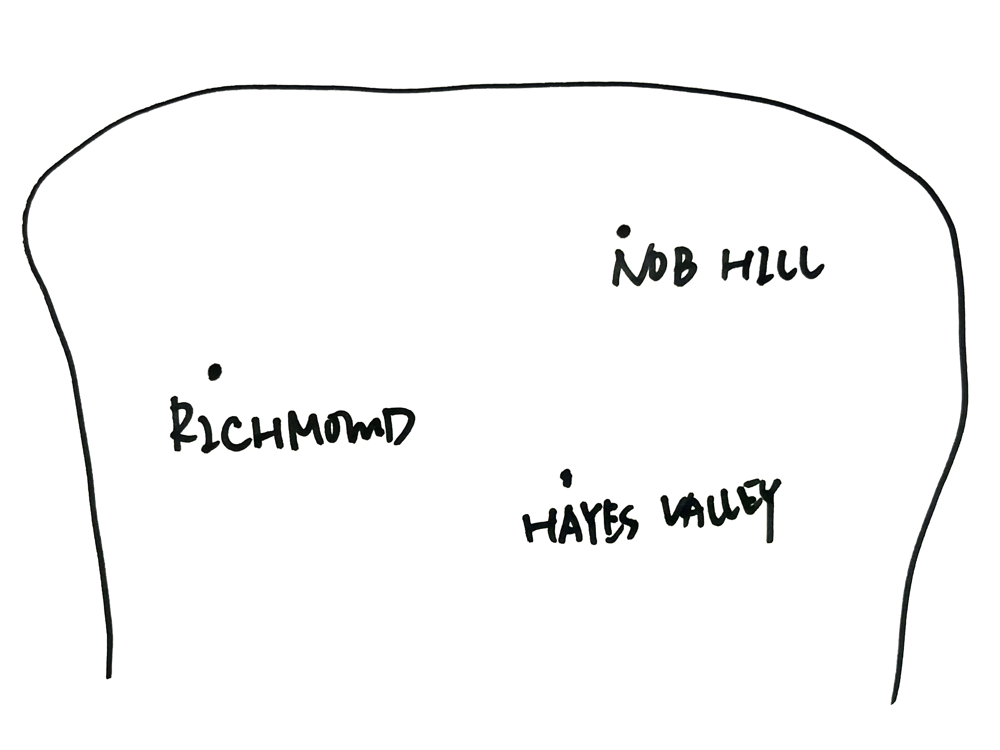

News Article Title
Iliana Garner, June Woo, Ashley Guo, Eugenia Cao
Lori Bongiovanni has lived in San Francisco for all 67 years of her life, residing everywhere from the Sunset District to Fillmore and now, Excelsior.
Yet, she can recall the color of each of her homes to this day, plus some of her neighbors. She describes a house that she used to pass daily when driving on the freeway to get to the city – a Victorian painted “shockingly pink.” A few years later, she saw it repainted a bright teal color. Now, it’s brown.
Many other houses are receiving a similar treatment, according to the recent articles proclaiming a “‘gray-washing’” of San Francisco, a trend where once-colorful residences are being repainted gray.
A Hundred Painted Ladies
The rows of Victorians that make up the city’s unique architectural landscape can be traced back to its population boom during the 1849 Gold Rush. These houses were originally painted white to disguise their wooden structure, and later a battleship gray color after the First World War. However, the colorist movement during the 1960s ushered in a new era of color. Houses were painted bright greens, blues, and golds.
Now, some San Francisco residents say that the colorful cityscape is a source of pride, distinguishing them from other American cities. Bongiovanni’s daughter and son-in-law live in Arizona, where she says the houses are “boring,” all painted either brown or gray.
However, some experts say that San Francisco’s house colors mean something greater to homeowners.
“To people feeling increasingly like helpless victims of big corporations, big government and jobs which are not ends, painting their homes is a satisfying form of self-expression,” Pomada and Larsen write in their book “Painted Ladies Revisited.”
Bongiovanni echoes this sentiment, saying that her and her neighbor’s freedom to paint houses is a creative outlet and display of their individuality. “It’s important for me to see different colors in the neighborhood. I want to see their different personalities.”
Also known as “Dr. Color,” Bob Buckter is one of the most famous color consultants in San Francisco. Over the course of 53 years, he has helped more than 20,000 clients paint their homes. He says he works with clients to gauge their tastes and find the house color that makes them happy. However, he has noticed more people painting their house shades of gray in the last few years.
When asked about the recent popularity of gray homes, his response was abrupt, as if he had rehearsed it.
“Gray is today. Gray is okay. Gray is great.” He laughed, explaining that he had been waiting for a chance to say that. “It’s just a trend.”
When asked about the trend, though, Bongiovanni said “It’s a shame.”
Why Is Gray So Great?
Some residents who have noticed the increase in gray houses say they believe they are repainted because it makes them easier to sell. Daniella Lubey, who has lived in the city for 13 years said, “There’s a psychology as to why a lot of the houses are now being turned gray – because it’s supposedly easier to sell to people who transplant into here.”
Steven Huang, co-founder and top producer for Ascend Real Estate, said he theorizes people are drawn to the colors because it makes older Victorians look more modern.
“[The] painting of Victorians and those colors actually bring out the features,” he said. “I think it makes the house look newer. And somehow stronger.”
But to some residents, this trend may have lasting consequences. One such article in The Guardian states that “gentrification gray homes have become a totem of affluent interlopers,” presenting the idea that these homes pose a potential threat to the rich history and culture that lay within the colorful facades.
Bongiovanni said that she was pressured by the real estate trend to repaint her house gray. She recalled the “beautiful, grayish-lavender” her family painted one former home, then later repainted that same shade because they loved it so much. But after it was sold, much of what she believes made the house uniquely beautiful was changed.
“We had to change a lot of our house, to make it ‘according to the trend.’”
The city itself does not prevent residents from repainting their houses according to their taste. “The Planning Code does not regulate the color of buildings. We do conduct design reviews and consider materials and other design elements but not specifically color choices,” City Senior Planner Kimberly Durandet wrote in an email.
Despite this, Bongiovanni says that this lack of regulation is part of what makes San Francisco’s colorful landscape possible. “It’s one of the uniquenesses of the city, that people are free to express themselves through the colors of their houses. San Francisco has that freedom. I hope it never goes away.”